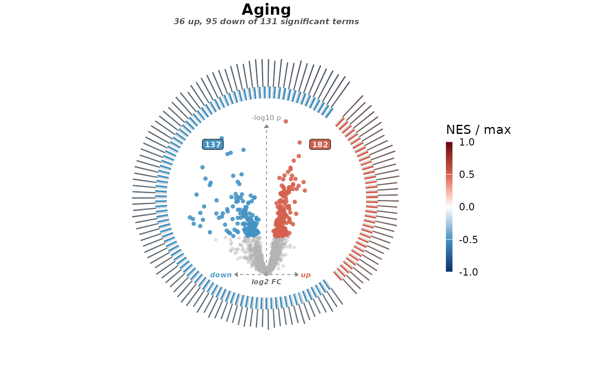

Every significant term of one contrast around its volcano
Source:R/plot_bias_ring.R
plot_bias_ring.RdDraws all significant terms of a contrast as a ring, without names, to show whether the contrast leans up or down. Every arc gets the same angle, so the up and down halves grow with their term counts. Fill and arc height are the score over the strongest drawn score: the strongest term is full colour and full height, and every other term is a fraction of it.
Usage
plot_bias_ring(
da,
enrichment,
contrast = NULL,
databases = NULL,
collapse = TRUE,
term_threshold = 0.05,
title = NULL,
subtitle = NULL,
theme = plot_theme(),
...
)Arguments
- da
DA results from
as_da(); the rows forcontrastare drawn. Points are called significant onpadj, or onpwhenpadjis empty. To colour by another statistic, such as a pi-value, pass it toas_da()aspadj.- enrichment
An enrichment object from
as_enrichment()orrun_enrichment().- contrast
Which contrast of
enrichmentto draw. Needed only when it holds more than one.- databases
Collections to draw from, matched against the
databasecolumn, e.g.c("Hallmark", "GO Slim").NULL(default) draws from all. Skipped, with a note, when the object has no database labels.- collapse
Hide terms flagged
"redundant"bydedup_terms().- term_threshold
Terms need
padjbelow this to be drawn.- title
Title.
- subtitle
Subtitle.
NULLreports the up and down term counts.- theme
Output of
plot_theme().- ...
Other
plot_volcano_ring()arguments that set the layout, such asring_radius,arc_height_range,p_thresholdorpoint_size.
Examples
da <- read_example("yvo")$da
#> 2103 of 2106 accessions mapped to Homo sapiens symbols.
#> 2106 of 2106 matrix proteins have DA results.
ex <- as_enrichment(read.csv(system.file("extdata", "examples", "yvo_fgsea.csv.gz",
package = "enrichVolcano"
)))
#> Reading "fgsea" results.
plot_bias_ring(da, ex, contrast = "Aging", title = "Aging")
